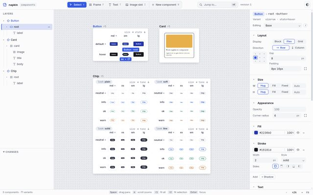
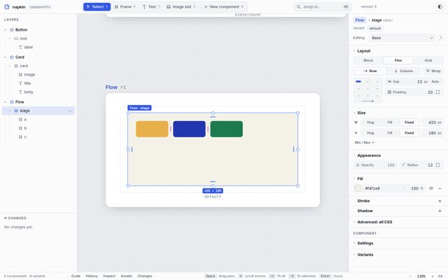
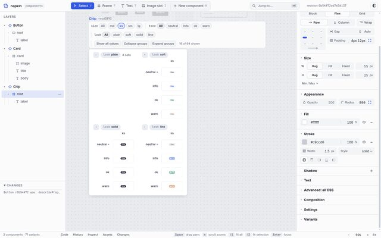
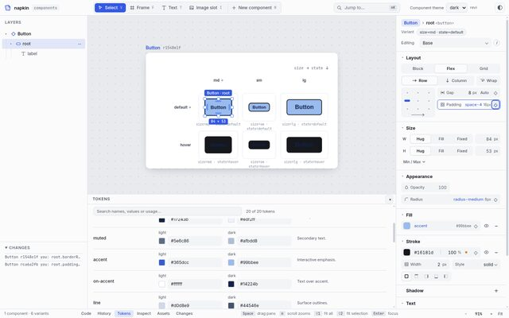
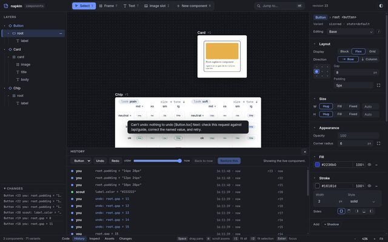
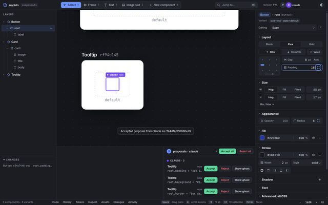
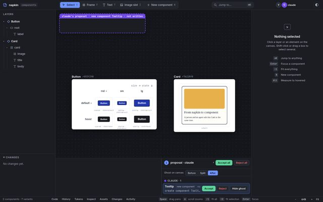
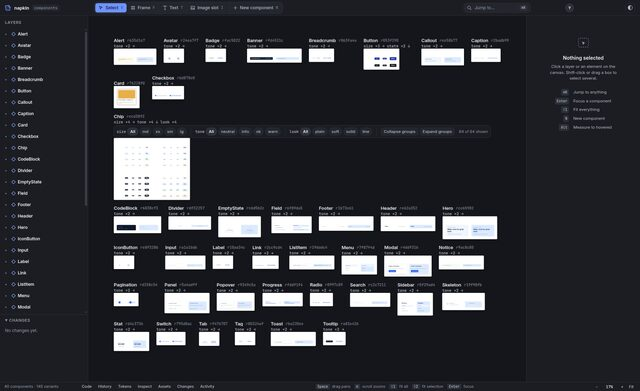
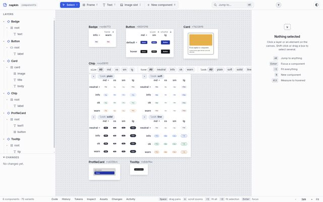
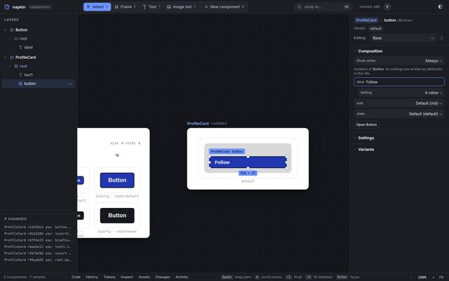

- passed
- critic pass, waiting to merge
- building
- needs David
napkin Build Log
From the approved dream to 113 of 126 criteria
This log covers everything that happened after David approved the dream on 2026-10-21 at 12:59, up to 2026-10-22 04:40. It records what was built, how each piece was checked, what broke, what it cost, and what is still waiting for David. The AI build lead (Claude, Opus) wrote it from the git history of feat/core, the ledger in docs/progress.md and the critics' reports.
Key
- Ledger One row per criterion, with status, verdict, evidence and commit.
- Builder Works on a branch in its own worktree under
~/Projects/.worktrees/napkin-<lane>. Never declares a pass. - Critic A fresh agent that never saw the builder's reasoning. Measures, walks, judges.
- Merge The lead merges into
feat/coreonly with the full suite green. - Walk Uses napkin end to end from the README; files what hurts as new rows.
Who decided, who built
David set the scope and approved the dream. Everything after that, the AI did, inside the rules he gave.
David decided
- Approved the dream in the review page: every criterion kept, N1–N8 all "yes", GO with the note to remove the "what napkin will never be" chapter (done).
- Asked for Codex CLI and Opencode (free models) to be used as subagents.
- Gave the lead discretion to choose better implementation options during the build.
- Approved deleting
/tmp/napkin-*during the /tmp incident (chapter 8).
The AI did
- Split the 104 criteria into lanes and ran 16 lane merges into
feat/core. - Wrote and ran every builder, critic and the first whole-product walk.
- Made 8 lead rulings on how to read a bar (listed in
docs/progress.md); one waits for David. - Recorded 7 proposed decisions (0006–0012). None is accepted yet; David has reviewed none of them.
1.2 Standing rules followed
Local only, no remotes or pushes. Files are staged by name. New npm dependencies are pinned and justified in the ledger. INTENT.md changes only with David's agreement. A criterion that can't be checked is "unverifiable", never "pass". At most two full test suites run on the machine at once (after the /tmp incident, a lock makes it one per builder queue).
1.3 Status by area
104 rows come from the approved dream. The 22 WPC rows were added by the first whole-product walk and its follow-up critics.
Timeline
About 15½ hours from approval to the fidelity merge, in three build rounds and one fix round.
| Round | When | Lanes | Outcome |
|---|---|---|---|
| 1 | 10-21 13:00–16:40 | agents, canvas, open, history, layout (engine started by Codex) | 5 lanes merged by 16:35. The files lane kept failing its critic; the engine lane was deferred after merge conflicts. |
| 2 | 10-21 16:40–22:20 | files (invariants, dialect 0004), components, tokens (Codex), layout paste | All merged. HTML paste (LAY-10) needed a redesign and 7 critic rounds before it passed with 0 approximations in 225 pastes. |
| 3 | 10-21 22:20–10-22 01:45 | agents-ui, engine (rebased) | Both merged after two conflicted merges were parked and fixed on their branches. |
| Walk 1 | 10-22 01:49–02:01 | whole-product critic (Opus) | S1, S4, S5, FEEL-05 done; S2 and S3 failed; 18 gaps filed. |
| Fix | 10-22 02:00–now | agents2, onboard2 (Codex then Sonnet), fidelity, keys, agents3, pan | agents2, onboard2 and fidelity merged. keys, agents3 and pan still in progress. |
What was built
Every area of the dream now has working code, tests and evidence on feat/core.








| Area | What it does now | Rows |
|---|---|---|
| INV · FMT · REL | Files stay the truth. One commit path with atomic writes, content-hash revisions and stale rejection. No-op saves are byte-identical; edits stay within their diff budgets. A server restart reconnects in about 0.2 s with no silent loss. | 18/18 |
| CAN · LAY | Infinite canvas, quick open, layers, multi-select, measure. Auto layout, grid, pins, snapping, type and fill controls, colour picker. HTML paste that draws exactly what the source drew. | 19/19 |
| CMP · TOK | Settings (props), variants, show-when, slots, instances, swap, extract, play mode. Token sources, binding, off-token dots, theme preview. | 15/15 |
| OPN · ONB | node src/cli.js init and open, read-only handling of files outside the dialect, adoption by proposal, a 40-component sample repo, docs that match the product. | 9/9 |
| AGT · HIS · AST · INS | Full MCP surface, presence, proposals with ghost cells, per-agent read/propose/write, attribution. Undo of your own edits only, restore, git attribution. Assets. Inspect, code strip, copy usage with its import line. | 25/25 |
| PRF | Shared React runtime, culling, bounded revision memory. 7 of 8 performance bars met (chapter 6). | 7/8 |
| FEEL · SCN | All five scenes pass cold. Keyboard-only S1 passes. FEEL-01 and FEEL-02 are open. | 8/10 |
Code changed since approval: 367 files, about 41,750 lines added. Of that, about 12,100 lines are in src/ and public/ and about 11,900 are tests. The suite went from 10 test files to 98.
How it was checked
No builder ever marked its own work as passed. Every pass came from a separate critic, then a green full suite at merge.
| Kind of bar | How the critic judged it |
|---|---|
| num | The critic re-ran the bench itself and reported its own numbers. Builders' numbers were treated as optimistic. |
| test | The named test file passes, and the critic checks the test actually tests the claim. |
| walk | A fresh agent drives headless Chromium with real mouse and key events and a real MCP process, from the README only. |
| blind | Screenshot pairs against public references, judged by two model families (Sonnet and Codex). Codex judges twice with the order swapped; a verdict that flips counts as a tie. A row passes only when both say win or tie. |
The order swap mattered: in CAN-04, Codex preferred whichever image came first. Counting that as a tie stopped a coin flip from deciding a row. This is now a saved rule for future sessions.
Critics kept finding what builders' own tests missed: tests that asserted on the wrong element, benches that measured the wrong thing (PRF-04 at 5% zoom with 3 components on screen), and fixes that broke something nearby (ids tied to the absolute folder path). Expect the second critic round to matter as much as the first.
Walk 1 and its 22 gaps
A fresh Opus agent used napkin from the README alone. Two scenes failed; both now pass.


| Scene | Walk 1 | Now | What changed |
|---|---|---|---|
| S1 Open 40 | done | pass | Open 836 ms, ⌘K 1.6 s, one-line diff. The doc's Badge example had to be fixed by hand; now a sample repo command exists. |
| S2 Agent beside me | fail | pass | A propose-mode agent can now propose a new component. The rejected edit never reaches a file; the agent is told. |
| S3 Napkin to app | fail | pass | Editor CSS no longer leaks into cells; new elements are border-box. Canvas and app are both 280 × 95 px. |
| S4 A bad morning | done | pass | 0 lost edits; stale retry works; undo touches only your edits. |
| S5 Tokens day | done | pass | Token names, off-token dots, theme across every cell. |
| FEEL-05 keys only | 86 Tabs | pass | ⌘K now finds properties: 15 keys for the whole of S1. |
5.2 The gap rows
| Rows | Lane | Gap | Status |
|---|---|---|---|
| WPC-01 02 16 | fidelity | Cells inherited editor CSS and variables; banner named the wrong line. | pass |
| WPC-03 09 12 | agents2 | Propose agents couldn't create; agents never heard of a rejection; tray actions off-screen. | pass |
| WPC-04 05 06 10 17 18 | onboard2 | Docs described an older product; position files written on open; ids changed when a repo moved; demo left temp files; no sample repo. | pass |
| WPC-08 | keys | ⌘K to a component selected nothing. | critic pass |
| WPC-07 11 13 14 15 | keys | Property search misses Fill and Settings; dark-theme demo chips unreadable; snap Undo not keyboard-reachable; raw error text in three places; top bar collides at 1280 × 720. | building |
| WPC-19 20 21 22 | agents3 | Answers lost behind other traffic; proposals lost on restart; name clash shown late; ghost hidden and empty. | critic pass small follow-ups |
Performance
Measured on this machine: headless Chromium with CPU rendering, shared with other work.
| Row | Measure | Bar | Critic | After merge | |
|---|---|---|---|---|---|
| PRF-01 | Cold open, 40 components | ≤ 1.5 s p50 | 1,097 ms | 1,105 ms | pass |
| PRF-02 | Panel edit to pixels, 200 components | < 100 ms p95 | 74–99.5 ms | 82.8 ms | pass |
| PRF-03 | Agent edit to pixels | < 100 ms p95 | 87.6 ms | 87.6 ms | pass |
| PRF-04 | 5 s pan and zoom, 200 components | p95 ≤ 16.7 ms | raw 18–20 ms | — | building |
| PRF-05 | Rebuild per component | ≤ 50 ms p95 | 8.6 ms | 8.3 ms | pass |
| PRF-06 | Edit #2000 vs #1 | ≤ 2× | 0.45× | 0.48× | pass |
| PRF-07 | Memory at 200 (server / page heap) | ≤ 500 / 400 MB | 108 / 17 MB | 109 / 17 MB | pass |
| PRF-08 | Typing to paint | ≤ 50 ms p95 | 45–47 ms | 46.6 ms | pass |
| REL-04 | 30-minute soak, 2 agents | ≤ 20% RSS growth | 9.0% | — | pass |
6.2 The PRF-04 story
The first engine critic found that every scroll-wheel event with a component selected blocked the page for 55–75 ms. The pan builder found the main cause: 200 frame titles each scaled with a CSS transform, so each became its own paint layer. After the fix, no main-thread task in the 30% runs is longer than about 12 ms.
The second critic confirmed a measurement problem. On this machine, even a trivial page that only slides one layer measures a raw p95 of about 18.2 ms. That is symmetric jitter in presentation timestamps from software rendering. The builder counts frames in whole screen refreshes instead. The critic called that a fair reading, and found the bench too easy: only 3 components were on screen. The current round sweeps across many components with the selection on screen, and keeps titles the right size during a zoom.
The bar in DREAM.md still reads "p95 frame ≤ 16.7 ms". The lead's ruling reads it as "p95 in whole refreshes ≤ 16.7 ms, with at most 2% missed or dropped frames". David decides whether to accept that reading.
Decisions
Two were accepted by David in the dream review. Seven were proposed by AI builders during the build.
| No. | Decision | Status | Decided by |
|---|---|---|---|
| 0004 | Widen the TSX dialect: conditionals, slots, instances, number props | accepted | David (N3); details by the AI |
| 0005 | Clashes, undo of your own edits, per-agent permissions | accepted | David (N4–N7); amendment by the lead |
| 0006 | Canvas chrome | proposed | AI, canvas lane |
| 0007 | Open repositories without sidecars; adoption by review | proposed | AI (Codex), open lane |
| 0008 | Layout controls write plain CSS, one line per control | proposed | AI, layout lane |
| 0009 | Undo, restore, git attribution, assets | proposed | AI, history lane |
| 0010 | Token sources and preview modes | proposed | AI (Codex), tokens lane |
| 0011 | One shared React runtime; bounded revision memory | proposed | AI, engine lane and merge |
| 0012 | Cells isolated with a CSS reset, not a shadow root; new elements border-box | proposed | AI, fidelity lane; border-box by the lead |
7.2 Lead rulings
- FMT-03: prettier's default config plus
singleQuote: true, matching the dialect. - LAY-03, LAY-04, LAY-06: what counts as "one line" for grid placement and pins; how the grid snaps at any zoom.
- Blind bars: two model families, order swapped, flips count as ties.
- 0005 amendment: unlisted agent names default to read; a Host/Origin guard on every route.
- WPC-04: decision records are excluded from "every TSX example in docs/".
- W means outer size: elements napkin creates get
box-sizing: border-box; pasted HTML keeps its own box model. - Opened repos stay trace-free: proposals for a repo napkin didn't init live in napkin's own state folder, not in the repo.
- PRF-04: the whole-refresh reading (chapter 6), pending David.
Incidents and failures
What went wrong during the build, why, and what stops it happening again.
| Symptom | Cause | Fix |
|---|---|---|
Every shell on the machine failed with ENOSPC while df -h showed free space. | 4–6 test suites in parallel leaked about 14,400 /tmp/napkin-* folders and hit the 1,048,576-inode limit of /tmp. | David approved deleting them. A cleanup preload now runs in every test process; Chromium profiles are removed when their owner dies; at most 2 suites run at once, now through a lock. |
| Machine slowed down badly. | About 140 orphaned headless Chromiums from killed test runs. | src/chromium.js starts every browser under a watchdog that stops it when its owner exits. |
| Merging engine into feat/core conflicted in 6 files. | Two lanes had each built their own shared React runtime. | An Opus merge kept one (/runtime.js), removed the other, and recorded it in 0011. |
| agents-ui merge: 6 tests red. | The clash chip compared hash revisions as numbers; a tab strip 17 px too narrow; the avatar slot pushed the theme toggle off-screen. | Fixed on the branch, then merged green. |
| Builders' full suites failed on missing modules. | Stale node_modules in older worktrees. | npm ci --ignore-scripts --no-audit --offline; now in the lane rules. |
| Component ids changed when a repo was moved. | A fix for untracked position files derived ids from the absolute path. | Ids now hash the path inside the components folder. Caught by the critic, not the builder's tests. |
| Codex stopped twice. | Usage limit (10-21, until 6:07 PM), then "model at capacity" mid-task (10-22). | Sonnet builders finished both jobs from the uncommitted work. |
| An Opencode free-model critic produced nothing. | Free models don't hold up on long critic runs. | Killed; Opencode is kept for short checks only (saved as a memory). |
| Builders edited the ledger, and one marked its own rows passed. | Prompt didn't forbid it. | The lead reverted those edits; lane prompts now say "do not edit docs/progress.md". |
Models and spend
Sonnet did most of the building and checking; Opus led, merged and walked; Codex built four lanes.
| Model | Used for | Spend |
|---|---|---|
| Claude Sonnet 5.5 | Most builders and critics | $192.94 |
| Claude Opus 5.5 | The dream, the lead, merges, the whole-product walk | $120.36 |
| Codex (gpt-6.1-sol, gpt-6-astra) | Builders for open, tokens, engine v1, onboarding; second blind judge | $18.50 |
| Opencode (free models) | One critic attempt | $0.00 |
| Total | ccusage@20.0.26, 10-21 and 10-22 | $331.64 |
These figures are machine-wide. They include the dream phase on the morning of 10-21 ($53.19 before round 1) and any other sessions on this machine on those days.
Open items
What is still running, and what only David can decide.
10.1 For David
| Item | Question | Owner | Since |
|---|---|---|---|
| FEEL-02 | Judge the design panel against Figma yourself. After 6 rounds, Sonnet calls it a tie and Codex prefers Figma in both orders. | David | 10-21 |
| PRF-04 | Accept the whole-refresh reading of "p95 frame ≤ 16.7 ms" (chapter 6)? | David | 10-22 |
| N8 | You marked "yes" on hosting and multiplayer. What should that mean? INTENT.md keeps "not hosted" until you say otherwise. | David | 10-21 |
| Dialect | shadcn/ui is 0 of 61 files editable (no const base, spread props, className/cn(), helper functions). Should the dialect learn those? | David | 10-21 |
| 0006–0012 | Seven decisions are proposed by the AI and not yet reviewed. | David | 10-21 |
10.2 In progress
- keys lane, round 2: WPC-07, 11, 13, 14, 15 (Sonnet builder).
- agents3 follow-ups: no trace in opened repos, temp-file sweep, answers for a fresh agent, all ghosts in view (Sonnet builder).
- PRF-04: harder bench and in-gesture titles; critic run on a quiet machine.
- FEEL-01: blind comparison of the whole canvas against Paper, after the keys lane merges.
- Walk 2: a fresh whole-product critic once the above land.
Changelog
- Edition 1.1 · 2026-10-22
- Click any still to see it enlarged (1440 px source), with arrow keys to step through and Esc to close. Requested by David.
- Edition 1.0 · 2026-10-22
- First edition. Covers the build from dream approval (10-21 12:59) to the fidelity merge (10-22 04:38).